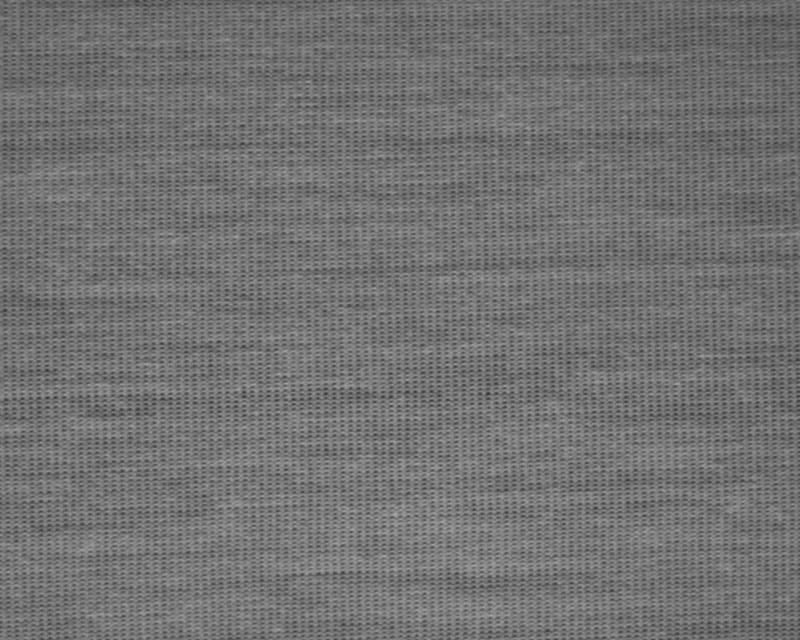
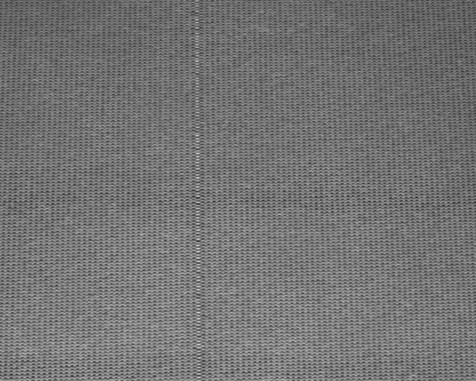
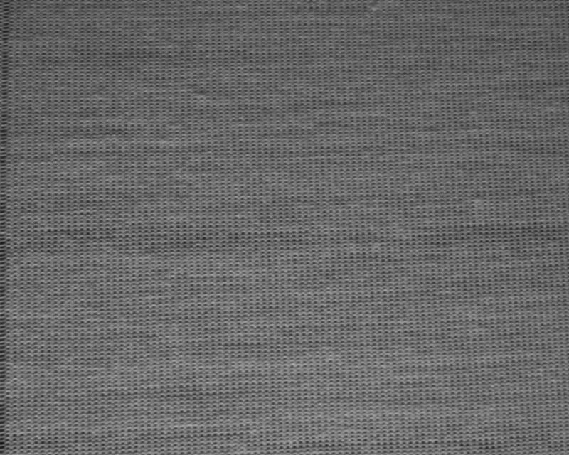

01
Build the reference
Collect normal patches.
TWO INSPECTION PIPELINES
A baseline for single photos and a change-aware experiment on production streams.
Explore the pipelines ↓
01 / WORKING MVP
Labeled photos of cracks in the plastic embedding of electrical commutators.
Collect normal patches.

Align size and brightness.

Inspect the surface area by area.

Capture local texture and edges.

Find the closest normal match.

Highlight regions for review.
HELD-OUT TEST
64 photos · grouped split
FIELD FEEDBACK

Defect examples are scarce, and new cases may lack an agreed label.
Build the reference from unlabeled startup frames.
Materials, process settings, and capture conditions may shift without reaching the AI team.
Flag visual shifts independently of anomaly scores.
Missed defects and false alarms both affect whether a model is usable.
Compare both outcomes before a reference update.
Managers need a useful summary rather than a message for every frame.
Bring flagged frames and visual shifts into a daily handoff.
02 / RESEARCH PIPELINE
93,196 time-ordered knitting-line frames across 22 production scenarios.
FEEDBACK → TEST SETUP
Build a fixed reference from one run. Test it on three other time-ordered runs.


THE CHECK Can we avoid false defect alerts while still detecting the visual shift?

Read consecutive production frames.

A frozen DINOv2 model maps image patches.

Keep common startup patterns without labels.

Compare patches and flag high scores.

Signal when image features change.

Keep the current reference during review.
SAME TSFABRICS STREAMS
All methods tested on the same held-out frames.
Eight patch features

All startup frames

Representative startup frames

DINOv2 with all startup frames barely changed false alarms here. Selecting representative startup frames reduced them from 971 to 11.
First sustained change alert after the new run began. None on the source holdout.
Updating cut false alarms 11 → 3 on the normal shift, but defect recall fell 40.2% → 6.1% on the larger shift.
PAIRED FRAMES
Recorded results from held-out frames.



| Test stream | Handcrafted | DINOv2 · all | DINOv2 · selected |
|---|---|---|---|
| Related run | 5 · 70.3% | 28 · 10.1% | 7 · 54.3% |
| Changed, normal | 975 · — | 971 · — | 11 · — |
| Larger shift | 14 · 42.7% | 2,060 · 100% | 0 · 40.2% |
Same time-ordered evaluation frames; labels are used only to measure outcomes. Experiment record ↗
PLANNED
Flagged frames, visual shifts, and review notes in one handoff.